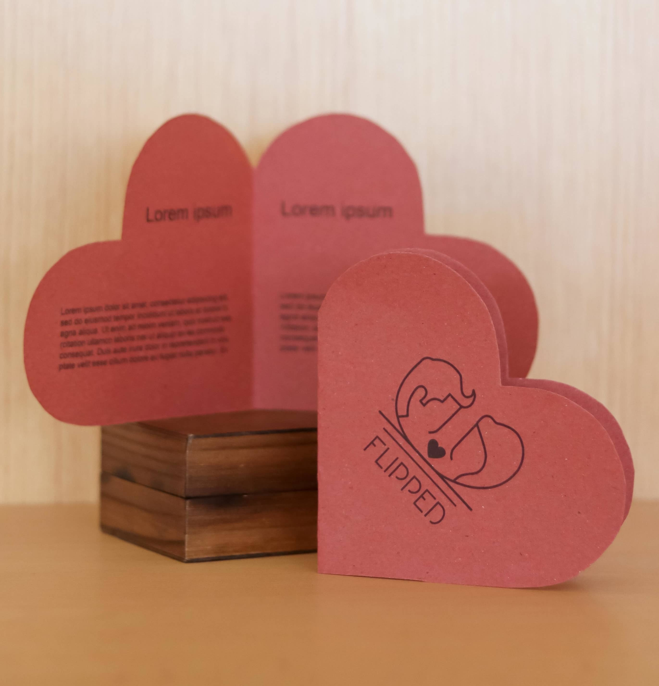
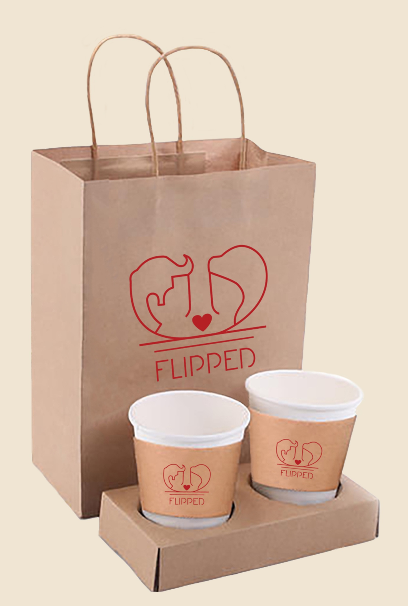
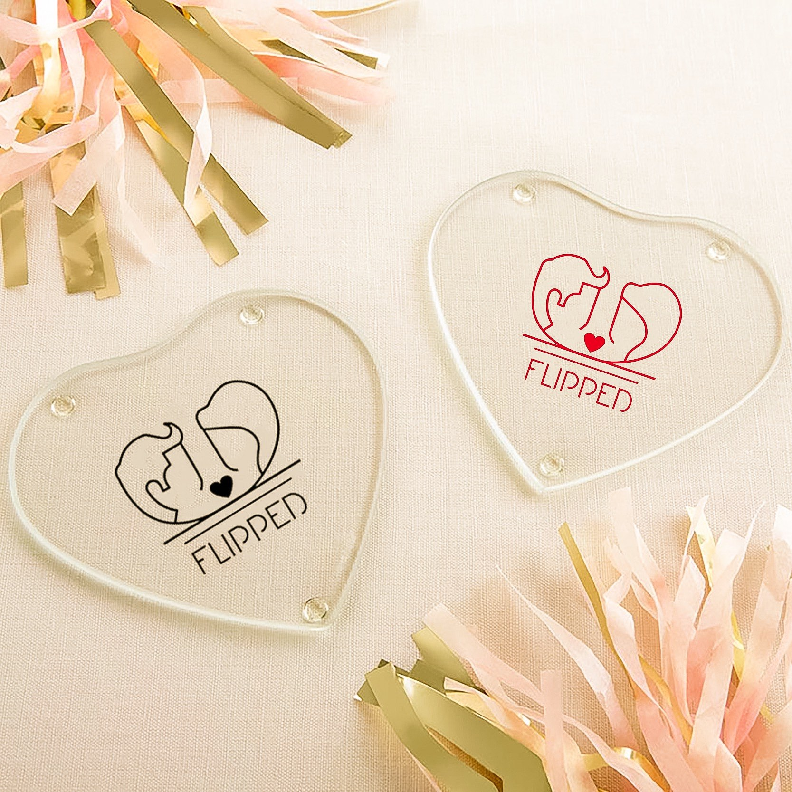
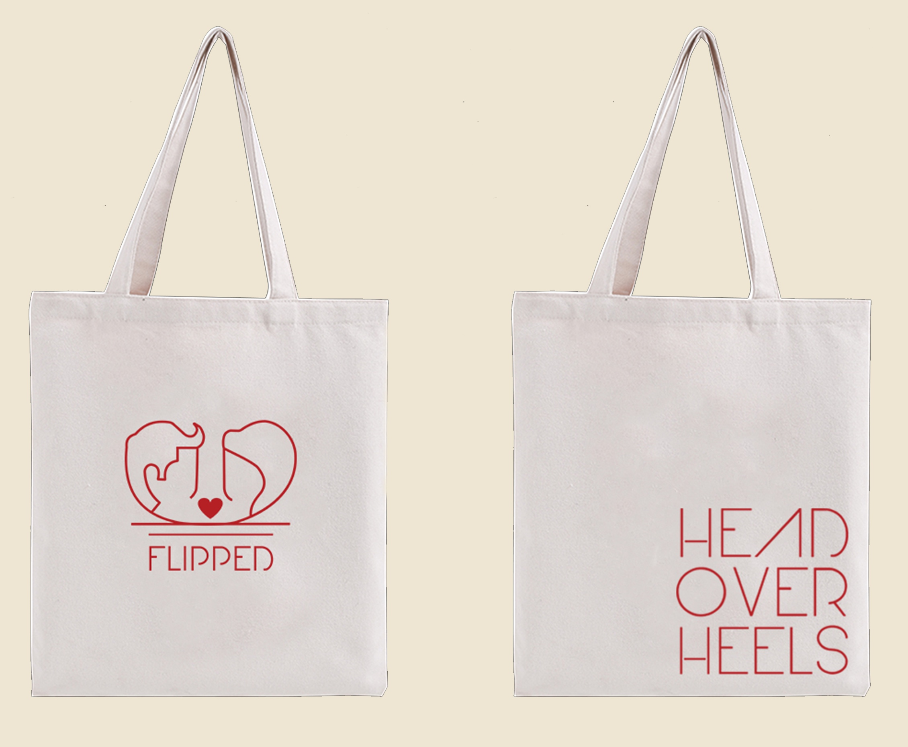
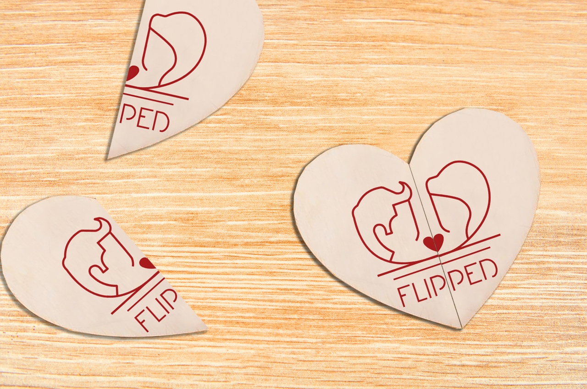

Business Card

The die cut mechanism must always applied to the business card to show the logo of FLIPPED Cafe.With black and red colour slip card put in this brown colour die cut mechanism, the overlook of the business card looks more stands out.
Leaflet
The leaflet must be a heart shape and in dark red colour. FLIPPED Cafe logo must be printed in front of the leaflet. The giving out leaflet design in heart shape to deliver feeling of love to customers and clients.
Packaging
The FLIPPED Cafe logo should be printed on all the packaging items. We try to find the packging that is closest to the coffee color and best suits our theme.
Coaster
The coaster must be a heart shape with silicon material. The FLIPPED Cafe logo should be printed on top of the coaster.We make it more warm side to cater the whole theme of the corporate identity design. We choose the material of the coaster among all the options: marble, wood and silicon.
Totebag
FLIPPED Cafe logo should be printed on one side of the tote bag and the tagline of the cafe should be printed on the right bottom corner of another side of tote bag. We choose to use it as our promotional item.
Special Item: Souvenir
The souvenir must be heart shape and the FLIPPED Cafe logo should be printed on the item. This souvenir first came up from a couple wooden puzzle piece. The two half-heart-shapes are put also separated and placed at the sides for visual reference of how it will look like when it is separated. We make the heart in half to symbolize a couple.
Overall Layout

All the products are put together and display as flatlay. The consistent use of typography supports a cohensive visual image across all communication materials. The FLIPPED typeface- Arual Light has been selected as FLIPPED Cafe’s typeface. No other typefaces should be used as the san serif font resonates the brand personality, which is modern and minimalistic.